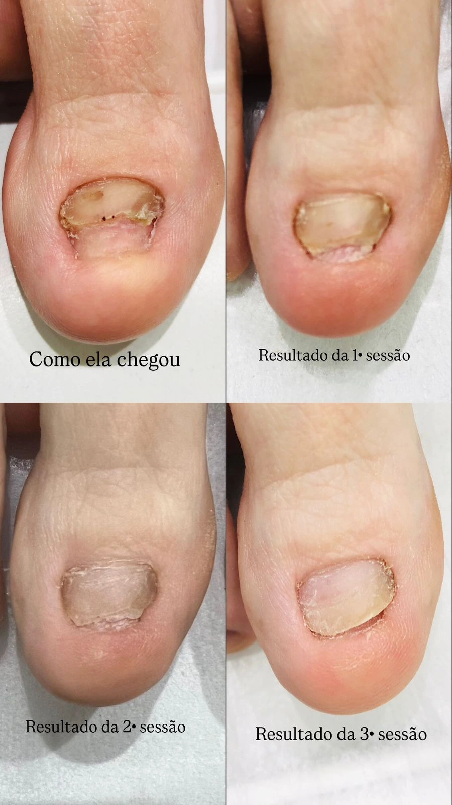

O que é a onicomicose
Onicomicose é o nome dado à infecção das unhas por fungos. Ela é mais comum nas unhas dos pés, que ficam mais tempo em ambientes quentes e úmidos, como dentro de calçados fechados.
Sinais mais comuns
- unha amarelada, esbranquiçada ou escurecida;
- unha mais grossa do que o normal;
- unha quebradiça ou que esfarela nas pontas;
- descolamento da unha em relação à pele.
Esses sinais podem ter outras causas. Por isso, é importante ter um diagnóstico antes de começar qualquer tratamento.
Como o laser atua
O laser é aplicado sobre a unha e a região ao redor, atuando de forma gradual sobre a área afetada. Como a unha cresce devagar, a melhora aparece aos poucos: a parte nova da unha tende a crescer com aspecto mais saudável a cada etapa do tratamento.

Quantas sessões são necessárias?
A quantidade varia conforme o grau de comprometimento da unha e a resposta de cada pessoa. A evolução é acompanhada a cada sessão, e o plano pode ser ajustado ao longo do caminho.
Cuidados que ajudam no resultado
- manter os pés limpos e bem secos, inclusive entre os dedos;
- preferir meias de algodão e trocá-las com frequência;
- alternar os calçados e deixá-los arejar;
- evitar andar descalço em áreas úmidas de uso coletivo;
- não compartilhar alicates, lixas e toalhas.
Em alguns casos, o tratamento a laser pode ser combinado com acompanhamento médico. Essa orientação é dada na avaliação.